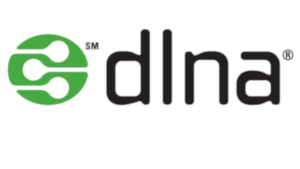

DLNA es un servidor multimedia (video, audio y fotos) muy ligero, ya que simplemente hará una transferencia del archivo solicitado.

sudo apt install minidlna
sudo nano /etc/minidlna.conf
Añadiremos al inicio del archivo de configuración, la ruta donde están nuestros archivos multimedia. Ejem:
media_dir=V,/media/Peliculas
media_dir=P,/media/Fotos
media_dir=A,/media/Musica
Si nuestro carpeta contiene, por ejemplo, vídeos y fotos, especificaremos de la siguiente manera:
media_dir=PV,/media/Peliculas_y_ Fotos
Si tenemos nuestros archivos multimedia en dos o más carpetas, podemos especificarlo así:
media_dir=A,~/Música
media_dir=A,/media/Musica
Quitaremos la "#" delante de inotify y pondremos yes.
# Automatic discovery of new files in the media_dir directory.
inotify=yes
Aquí podremos poner nombre a nuestro servidor:
# Name that the DLNA server presents to clients.
friendly_name=Mi Servidor DLNA
Para que todos los nuevos archivos multimedia que añadamos, sean añadidos de forma automática a nuestro servidor, deberemos tener habilitada esta opción en el archivo de configuración:
# Automatic discovery of new files in the media_dir directory.
inotify=yes
Para crear una nueva base de datos en nuestro servidor y eliminar la actual, por ejemplo, en el caso que cambiemos las carpetas donde esté nuestro contenido multimedia:
Borraremos la base de datos:
sudo rm -f /var/cache/minidlna/files.db
Reiniciaremos el servidor
sudo service minidlna restart
Como has podido ver en este paso anterior, la base de datos así como las portadas de los archivos multimedia, están defecto en la carpeta /var/cache/minidlna. Pero en el archivo de configuración, podemos cambiar la ruta. Para ello desmarcaremos la almohadilla y especificaremos la ruta deseada.
# Path to the directory that should hold the database and album art cache.
#db_dir=/var/cache/minidlna
exec /usr/sbin/service minidlna start
o
sudo systemctl start minidlna.service
o
sudo service minidlna start
sudo service minidlna stop
sudo service minidlna restart
Cuando añadamos nuevo contenido a nuestra Biblioteca multimedia, es posible que no aparezca, esto se soluciona forzando la recarga de nuestra base de datos:
sudo minidlnad -R ; sudo service minidlna restart
o sino, podemos hacer:
sudo service minidlna force-reload
Si accedemos a nuestra IP:8200, veremos todo el contenido disponible a través de nuestro servidor DLNA.
En caso de tener cortafuegos, recordar abrir los puertos del servicio para poder acceder:
Publicado por Angel el jueves 27 diciembre del 2018 y actualizado el domingo 24 febrero del 2019
También te puede interesar:
Powered by org-bash-blog
Writing in orgmode whith emacs

Este obra está bajo una licencia de Creative Commons Reconocimiento-NoComercial-CompartirIgual 4.0 Internacional.